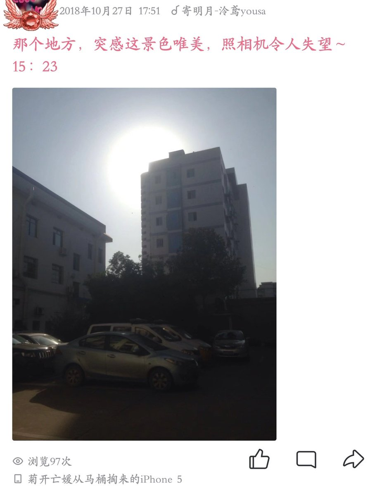

4
当然，那两天假期的第一次跟踪，距离我想到这个办法还有一段相当的时间。图片是我第二天再来的时候拍下的，上面的时间可以证明。而且我依稀记得，这个女生是我第一次实践，但并不是第一次成功。第一次成功是在我的女神身上，我成功知道了我女神住在哪扇门。当然，那是一个多月之后的事了。

当然，那两天假期的第一次跟踪，距离我想到这个办法还有一段相当的时间。图片是我第二天再来的时候拍下的，上面的时间可以证明。而且我依稀记得，这个女生是我第一次实践，但并不是第一次成功。第一次成功是在我的女神身上，我成功知道了我女神住在哪扇门。当然，那是一个多月之后的事了。

3
确定了楼的位置之后，我定的目标是要具体知道是哪扇门。因为当面问或者找人打听对我这个i人都不现实，所以必须另辟蹊径。我想到的办法是：放学光速离校骑上车，然后快马加鞭到她家的楼，然后直接上比较高的楼层，蹲守着往下面看，就有可能蹲到。就是操作起来有点辛苦，而且很刺激，心脏突突跳。 https://t.co/jJ08rLCEt8
确定了楼的位置之后，我定的目标是要具体知道是哪扇门。因为当面问或者找人打听对我这个i人都不现实，所以必须另辟蹊径。我想到的办法是：放学光速离校骑上车，然后快马加鞭到她家的楼，然后直接上比较高的楼层，蹲守着往下面看，就有可能蹲到。就是操作起来有点辛苦，而且很刺激，心脏突突跳。 https://t.co/jJ08rLCEt8